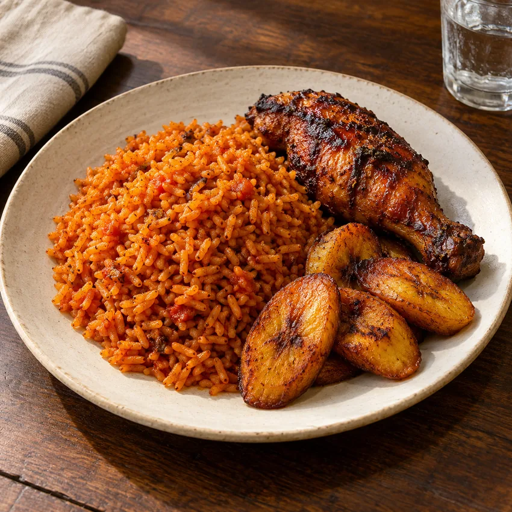
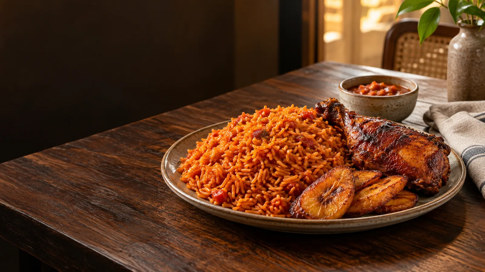

A Nigerian food concept
Jollof first.
Stories after.
Some meals ask you to slow down. This table starts with familiar Nigerian dishes and enough room to stay a little longer.
See the sample menu01 / A seat at the table
The idea
Food people know.
A place they remember.
Pepper Table is an imagined restaurant built around the dishes that make a table feel full. This website shows how a guest could discover the food quickly, from a phone or a laptop.
Read about the conceptFrom the sample menu
Start here.
Illustrative food photography and sample dishes. This is a design concept, not an active menu.